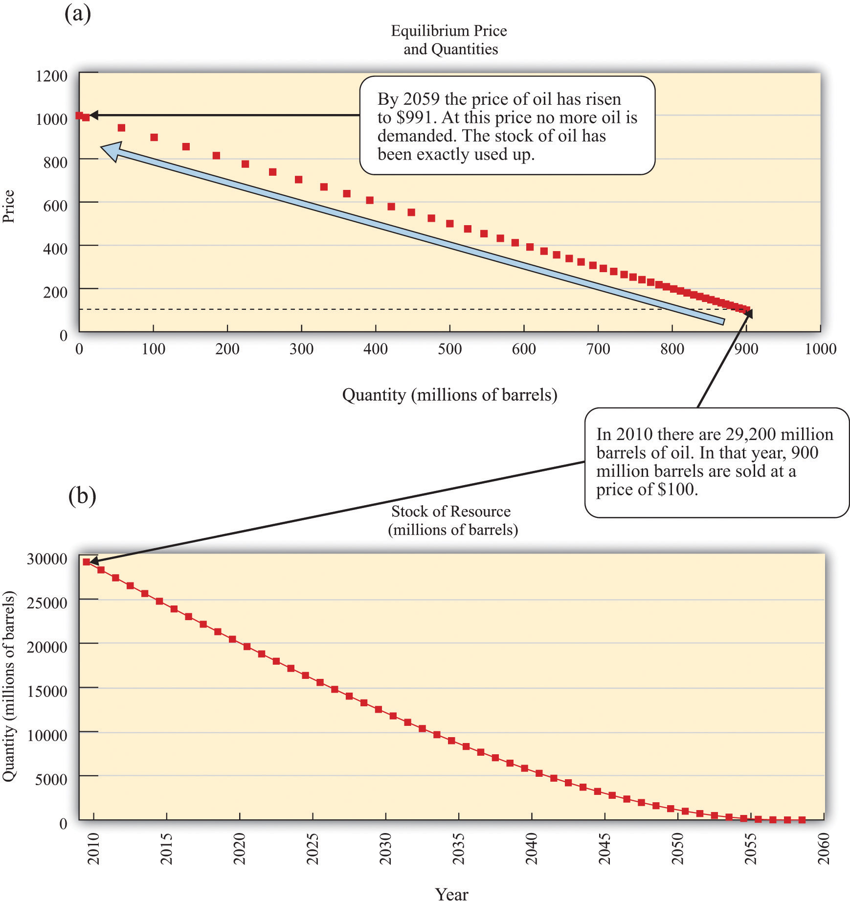

Here are some places you probably would have difficulty finding on a map:
These 10 places have the dubious distinction of being the world’s most polluted cities, according to a nongovernmental organization called the Blacksmith Institute.See http://www.worstpolluted.org. As a child, one of the authors of this book lived for a year in one of these towns. Figure 14.1 "The 30 Most Polluted Cities in the World" shows these cities plus 20 more, giving us the 30 cities in the world with the worst pollution. In some of these places, mining and smelting industries have contaminated the air or the groundwater. In some, dangerous chemicals have been improperly disposed of—often illegally. In some, there is radioactive contamination. In some, garbage and sewage pollute the groundwater, or automobile emissions pollute the air. In sum, you would not want to live in any of them.
Figure 14.1 The 30 Most Polluted Cities in the World

This map shows the locations of the 30 most polluted cities in the world, according to the Blacksmith Institute.
The consequences of such pollution are tragic. Pollution of this magnitude causes severe health problems, birth defects, and high mortality rates. For example, according to the Blacksmith Institute, life expectancy in Dzerzhinsk, Russia, is 42 for men and 47 for women. Lead pollution is directly linked to a reduction in children’s intelligence and has also been linked to increased violence.
The map reveals that many of these highly polluted cities are found in India, China, and the countries of the former Soviet Union. The richer countries of the world, such as the United States, Canada, Japan, Australia, New Zealand, and all of Western Europe, are not featured. Neither, for the most part, are the very poorest countries of the world, such as much of Africa. Severe industrial pollution seems to be at its worst in middle-income, developing countries. This does not mean that rich countries did not recently have—or do not still have—pollution problems of their own. Only a few decades ago, the Cuyahoga River in Ohio was so polluted that it caught fire; indeed river fires were once relatively commonplace in the United States. The US Environmental Protection Agency lists well over 1,000 sites as eligible for Superfund cleanup (http://www.epa.gov/superfund) because environmental contamination is judged hazardous to health. Little more than 50 years ago, air pollution killed an estimated 4,000 people in London, England, during the so-called Great Smog.
We emphasize in many places in this book that market transactions generate value in an economy. Firms produce things that people want to buy, so both firms and consumers benefit. People voluntarily work for companies, earning money they can then use to purchase goods and services while simultaneously allowing firms to produce the products that people want. These claims are correct, yet the citizens in Linfen, China, or La Oraya, Peru, could be forgiven for thinking that this is a very rosy view of how economies function in practice. Those who live in these communities around the world obviously do not like living in such polluted environments. So what is going wrong? How is it that voluntary trades made by individuals and firms can sometimes lead to such unpleasant and dangerous outcomes?
To begin our answer to this question, let us take a particular example: Mexico City, a city that also makes the list of the worst 30. The air in Mexico City contains particulate matter (think of this as soot and smog) that can cause lung disease and other bronchial problems. This pollution largely comes from automobile emissions, which are a severe problem in part because so many cars in Mexico City are old. According to the Blacksmith Institute report,Blacksmith Institute, “The World’s Worst Polluted Places,” September 2007, accessed March 14, 2011, http://www.blacksmithinstitute.org/wwpp2007/finalReport2007.pdf. even a moderate reduction in the amount of particulate matter in the Mexico City air could save thousands of lives each year.
But if everyone dislikes the pollution, why is it being produced? After all, no one is forcing the residents of Mexico City to drive their cars. They could all decide to drive much less, and if they did so, the result would be a cleaner city. Indeed, not everyone is a polluter. Particularly in richer countries, more and more people are driving electric cars or hybrids, which use a combination of electricity and fossil fuels. Such cars emit less pollution from their tailpipes. According to one study, the main reason that people purchase these cars is because they “want an environmentally friendly car.” This reason was cited by 66 percent of the respondents. The next most popular response was “I want to save money on gas,” which was cited by 16 percent of the respondents. The survey also found that half of all hybrid owners also donated money to environmental causes.Jonathan Klein, “Why People Really Buy Hybrids,” Topline Strategy Group, accessed January 31, 2011, http://www.toplinestrategy.com/green_form.htm. Of course, people can have multiple motivations for purchase. The same study concludes that only about 27 percent of hybrid users do not have a financial motivation for their purchase.
Some of these reasons are clearly self-motivated: when gasoline costs $4 or more a gallon, fuel-efficient vehicles look very attractive. However, the desire to behave in an environmentally conscious way is rather different. People like to feel that they are behaving responsibly, even if they understand that their impact on total pollution is negligible. But there is another aspect of this desire to be green that is even more intriguing. If you interview one of these individuals, you will typically learn that he sees two ways in which hybrids are a good choice for the environment: (1) they generate less pollution, and (2) they consume less oil.
Both are environmental concerns. Both address how we use up different natural resources: clean air and fossil fuels. Yet they are very different problems. In this chapter, we consider both pollution and our consumption of natural resources—including but not limited to oil—and ask,
Can we rely on markets to deal with pollution and natural resources?
We start our analysis with a familiar idea: the gains from trade. Figure 14.2 "The Gains from Trade", which also appears in other chapters in this book, illustrates one of the biggest insights of economics: voluntary transactions create value. In every voluntary transaction, both buyer and seller obtain surplus from trading. Even more striking, if these transactions take place in a competitive market, then buyers and sellers reap all the gains from trade.
Figure 14.2 The Gains from Trade

In a competitive market, total surplus (the sum of the buyer surplus and the seller surplus) is maximized.
The first section of the chapter looks at the use of clean air. To start off, we tackle this in a small-scale situation: we consider what happens if a smoker and a nonsmoker share an office. We ask under what circumstances they might be able to resolve their disagreement without outside assistance. We then explain that air pollution in Mexico City is really the same problem, albeit much larger. We show that the problem of pollution has two related aspects: (1) we cannot easily force polluters to pay for their “use” of clean air, and (2) as a result, there is a divergence between the cost of an action to an individual polluter and the cost to society as a whole.
We discuss different kinds of policies that are used to address these problems. Then we turn to our use of natural resources such as oil. We consider various kinds of resources and consider what economic theory can teach us about how these resources are likely to be used. Finally, we consider the implications for economic policy.
If we lived in a world where all economic transactions took place in competitive markets and in which there were “enough” markets, then we would obtain all the possible gains from trade. This logic falls down in reality because markets sometimes fail, for various reasons.
We will get to Mexico City shortly. We begin, however, by thinking about a more isolated case of air pollution: cigarette smoke in an office.
Cigarettes are sold and smoked almost everywhere. Yet in most countries around the world, you are not able to smoke when and where you please. Governments around the world place limitations on who can buy cigarettes, where they can be bought, and where they can be consumed. From an economic point of view, governments are deliberately restricting the ability of individuals to engage in voluntary transactions.There are many different ways in which governments intervene in market transactions. Chapter 12 "Barriers to Trade and the Underground Economy" contains more discussion. Why do governments restrict an individual’s ability to smoke where and when that person wants?
Mixed messages.
Our answer to this question begins by imagining two people who must share an office. One is a nonsmoker who dislikes the smell of cigarette smoke, while the other likes to smoke while working. On the way to work one day, the smoker purchases a pack of cigarettes that she plans to smoke at work. We can reasonably deduce from this that her valuation of these cigarettes is greater than the price she has to pay. She gets buyer surplusA measure of how much the buyer gains from a transaction, equal to the buyer’s valuation minus the price. from the purchase. To be concrete, suppose a pack of 20 cigarettes costs $4 and her valuation of a pack of cigarettes is $10. Her surplus is then $6.
We can also reasonably assume that the seller’s cost is less than the price, otherwise he would not choose to make the sale. He gets seller surplusA measure of how much the seller gains from a transaction, equal to the price minus the seller’s valuation.. For example, if his wholesale price for a pack of cigarettes is $2, then he earns $2 surplus (= $4 − $2) on every pack that he sells. The total surplus from the sale is the buyer surplus plus the seller surplus—that is, $8. So far so good.
The problems begin when the worker smokes her pack of cigarettes in the office. She obtains her $6 worth of enjoyment. However, a third party has now been affected by her decision to consume cigarettes: her office mate. The office mate dislikes the smell of smoke and may even face health risks from second-hand smoke. Thus even though the smoker and the store that sold the cigarettes are both better off, the office mate has been made worse off.
We should not automatically assume that the best thing is to ban smoking in the office just because the office mate is adversely affected. We need to know how much the nonsmoker is inconvenienced. Suppose the most the nonsmoker would be willing to pay for a smoke-free office is $2 per day. In this case, the $6 gain to the smoker exceeds the $2 loss to the nonsmoker. It seems like it should be easy enough for the two individuals to find a way for everyone to be happy. For example, imagine that the smoker agreed to pay the nonsmoker $4 a day for the right to smoke in the office. Both would then get $2 surplus per day.
On the other hand, suppose a smoke-free office is worth $10 per day to the nonsmoker. In this case, his valuation of clean air ($10) exceeds the smoker’s gain ($6). The smoker would be unwilling to pay the nonsmoker enough to compensate for dirtying the air in the office. It would be better not to allow smoking in the office.
We have assumed here that the default situation is that the office should be smoke-free. In the language of economics, the nonsmoker owns the property rightsAn individual’s (or institution’s) legal right to make all decisions regarding the use of a particular resource. to the clean air in the office. Property rights over a resource mean that, by law, the owner can make all decisions regarding the use of the resource. Because of this, the smoker must pay the nonsmoker compensation if she wishes to be allowed to smoke in the office.
We could imagine the opposite situation, where the smoker starts off with the right to smoke in the office. Would we expect a different result from their negotiations? If the smoke-free office was worth only $2 to the nonsmoker, then he would not be willing to pay enough to persuade his office mate not to smoke: the most he would pay is $2, which is less than the smoker’s surplus. If, on the other hand, the nonsmoker valued the smoke-free office at $10, then he values a smoke-free office more than the smoker values smoking in the office. The nonsmoker could pay the smoker not to smoke. For example, imagine he pays her $8 per day to not smoke. He pays $8 for the clean air, which is worth $10 to him, so he gets $2 of surplus. The smoker receives $8, which exceeds the surplus she would get from smoking in the office. Again, they would both be happy.
Thus if the smoker “owns” the clean air, the nonsmoker must pay the smoker if he wants a smoke-free office. If the nonsmoker has the property rights, it is the smoker who must pay. In either case, the basic outcome will be the same: there will be smoking in the office if the smoker’s valuation exceeds the nonsmoker’s valuation; there will be no smoking if the nonsmoker’s valuation exceeds the smoker’s valuation. But the property rights are valuable. It is the owner of the property rights—whoever that may be—who gets compensation from the other.
As long as they know who has the property rights, it seems likely that the two individuals will be able to come to an agreement that benefits them both. You might imagine, though, that they would find it far harder to come to an agreement if it was ambiguous who had the property rights in the first place. The smoker would likely claim the right to smoke in the office, while the nonsmoker would assert his right to clean air. If they could not settle this basic question, it is unlikely that they would be able to reach a more complicated agreement involving compensation payments.
Let us imagine a further twist. Suppose the nonsmoker has property rights but values clean air at only $7 per day. This is still greater than the smoker’s surplus, so, as before, we expect that they would agree to a smoke-free office. But the nonsmoker’s valuation for clean air is less than the total surplus of the smoker and the store that sold her the cigarettes (recall that the smoker gets $6 surplus and the store gets $2 surplus). If the storekeeper, the smoker, and the nonsmoker all got together, they should again be able to find an arrangement that benefits everyone. For example, the storekeeper and the smoker could jointly give the nonsmoker $7 and still have $1 of surplus to bargain over.
It seems perfectly reasonable to imagine that two people who share an office could come to a mutually beneficial agreement about smoking in the office. It seems much more far-fetched, though, to imagine that they would come to an agreement together with the storekeeper who sold the cigarettes. Economists say that the difference between the two cases is due to transaction costsThe costs of making and enforcing agreements.—the costs of making and enforcing agreements.
We began this section by observing that a transaction may affect not only the buyer and the seller but also third parties. When this is the case, we cannot be sure that trade benefits everyone. Even if the buyer and the seller are both made better off, third parties may be made worse off. However, if property rights are clearly established and transaction costs are low, then we can expect that private negotiations could solve these problems. This idea was first articulated by the Nobel prize–winning economist Ronald Coase (http://www.coase.org) and is called the Coase theoremIf property rights are clearly established and transaction costs are low, private bargaining will lead to efficient outcomes.: if property rights are clearly established and transaction costs are low, private bargaining will lead to efficient outcomes.
It is notable that in reality, we do not see office workers buying and selling the right to smoke in an office. Instead, blanket bans on smoking have been enacted throughout the United States and in many other countries throughout the world. Why do we get this government response? One argument for these bans is that smoking poses health risks. In this case, antismoking campaigns are based on an idea that individuals are not always capable of making good choices for themselves.Chapter 5 "Life Decisions" has more to say about whether individuals are good judges of their own actions, particularly when making decisions with long-term consequences. But another reason is a recognition of the transaction costs involved in these private negotiations. Even if you think two coworkers could reach an agreement, imagine an office with 10 people—perhaps there are 3 smokers and 7 nonsmokers—all of whom place a different valuation on clean air in the office. If we knew everybody’s true valuations, then in theory it would be possible to create a system of payments that made everybody better off. In practice, however, people might lie about their valuations. Finding the right system of payments would be very hard indeed and would take a lot of time and effort.
Perhaps you can now see the parallel with Mexico City. The major pollution problem is the emissions from the cars that people drive. Individual residents of Mexico City make decisions to buy gasoline and drive. These transactions create value for the drivers and the sellers of gasoline—but third parties are adversely affected. The Coase theorem can work when the parties involved are easily identifiable and small in number. In contrast, it is impossible to imagine the 20 million residents of Mexico City all meeting and coming to some kind of private agreement to limit their collective driving behavior.
Air pollution and second-hand smoke have a common structure, which we explain in this section. Once you understand these common elements, you will probably be able to think of many other examples. We show the interactions between an individual and the rest of society in Table 14.1 "The Payoffs in a Social Dilemma Game". This is called a social dilemmaA situation where individually rational choices lead to an outcome that is bad for society as a whole. game.
Table 14.1 The Payoffs in a Social Dilemma Game
| Everyone Else Drives (Air Is Polluted) | Everyone Else Takes Public Transportation (Air Is Clean) | |
|---|---|---|
| You Drive | $0 | $2 |
| You Take Public Transportation | −$1 | $1 |
| Regardless of which action you choose, your payoffs are higher if everybody else takes public transportation ($2 > $0; $1 > −$1). Regardless of the actions of others, your payoffs are always higher if you drive ($0 > −$1; $2 > $0). | ||
In Mexico City, it is very possible that people would agree that they would prefer a situation where everybody drives less. Yet this is not what happens. To see why, look at Table 14.1 "The Payoffs in a Social Dilemma Game" and imagine you are a car owner in Mexico City. You have to decide how to get to work—by driving or taking public transportation. There are two rows in the table. One is labeled “You Drive,” and the other is labeled “You Take Public Transportation.” The rows represent your possible choices. The columns refer to everybody else’s choices. Everyone else who owns a car similarly chooses between driving and taking public transportation. To keep things simple, we suppose that everyone else makes the same choice. If everybody chooses to drive, then the air is polluted. If everybody chooses to take public transportation, then the air is clean. The current situation in Mexico City is that you and all other car owners are driving to work. You enjoy the convenience of driving rather than taking public transportation, but you suffer from the polluted air.
The numbers in the table refer to your payoffs from the different possible combinations. As in our smoking example, we can think of these as the valuations per day that you place on different outcomes. What matters is how these different possibilities compare with the status quo, where you and everyone else drive. We therefore begin by setting your payoff at the status quo (the number in the top left cell) at $0. Suppose also that the following are true.
Based on these conditions, we can calculate the payoffs in the other three cells of the table:
What would you do in this situation? Suppose you think that everyone else is going to drive. You are better off if you drive (payoff is $0) rather than take public transportation (payoff is −$1). What if everyone else takes public transportation? Then you still prefer to drive (payoff is $2) rather than take public transportation (payoff is $1). We conclude you will drive regardless of what others in society choose to do.
Here is the crux of the problem: the situation looks the same to everybody else as it does to you. As you evaluate these relative payoffs and choose to drive, so too does everyone else. We therefore expect that everyone will follow their individual incentives and choose to drive. We end up in the top left cell, where your payoff is $0.
What is striking, though, is that you would prefer the outcome where everybody—including you—uses public transportation. Your payoff in the bottom right cell is $1, which is better than the current situation. Everyone else would prefer this outcome as well. Society ends up in a bad situation, with everybody driving, even though everyone agrees that there is a better option out there. This is the essence of the social dilemma.
You are one of many people. Although you may value clean air, you are powerless as an individual to keep it clean. And because you are only one person, your decision has a tiny effect on the overall quality of the air. Thus you choose to drive, without paying attention to your effect on the environment. But because everybody makes the same decision, the cumulative effect is that there is a lot of air pollution.
The social dilemma is also sometimes known as the “tragedy of the commons.” This refers to the time when cattle farmers had access to common grazing land. Because every farmer had the right to graze his cattle on this land, no one was in a position to ensure that the land was well managed. Every farmer paid attention only to the health of his own cattle and did not worry about the effect of his cattle on the overall quality of the grazing land. Because every farmer made the same decision, the result was overgrazing, which destroyed the land for everyone.
How do we solve problems such as this? To avoid the bad outcome of the social dilemma, we must find some way of changing the payoffs of the game. We have already seen that, if transaction costs are low, people may be able to negotiate privately. In the case of Mexico City smog, however, such negotiation is impractical. In this case, one possible solution is for the government to alter the payoffs. For example, in the run-up to the 2008 Olympics in Beijing, the Chinese government wanted to improve air quality in the city. It therefore allowed cars to drive in the city only every other day (whether a car was permitted on a given day depended on whether the last digit of the license number was odd or even). If you tried to drive on the wrong day, you might have to pay a large fine, so the payoff to driving changed. We have more to say about government policy later in the chapter.
Toolkit: Section 31.18 "Nash Equilibrium"
You can review the social dilemma and other games in the toolkit.
When people face a social dilemma, the actions that are the best for all individuals lead to an outcome that is bad for everyone. Much of the rest of the chapter addresses why this happens.
We begin by remembering our theory of how people make consumption choices. In general, people consume a good up to the point where their marginal valuationThe maximum amount an individual would be willing to pay to obtain one extra unit of that good. from the last unit of that good equals the price of that unit. This is a specific statement of a more general principle for decision making: “consume until marginal benefit equals marginal costThe extra cost of producing an additional unit of output, which is equal to the change in cost divided by the change in quantity..”
In the social dilemma of Table 14.1 "The Payoffs in a Social Dilemma Game", you had two choices: driving or not driving. Let us now expand that to think about a situation where you are deciding how much to drive. Driving your own car brings private benefits (that is, benefits that are obtained only by you), such as comfort and convenience. Driving also brings private costs, such as the costs of gasoline and maintenance of your vehicle. If this were all that was going on, there would be no problem: you would drive up to the point where your marginal (private) benefit from driving was equal to your marginal (private) cost of driving.
When you drive, though, you also impose costs on other people. Your decision to drive one more mile has a marginal social costThe cost to society of consuming or producing one more unit of a good or a service. as well as a marginal private cost. Marginal social cost is the cost to society of consuming or producing one more unit of a good or a service. By “society,” we simply mean “you and everybody else.”
When you choose to drive your car, you contribute to air pollution. This is a cost to the rest of society. However, you have no incentive to worry about this. You care only about the extra cost to you. The same is true when the smoker smokes one more cigarette in the office: She imposes a cost on her office mate, but—unless they make an agreement otherwise—she does not pay this cost. She takes into account the marginal private cost to her (that is, how much she must pay for one more cigarette), but she ignores the cost to other people.
Ignoring for a moment some tricky questions about how to measure the cost of your actions to society, we can set out a principle for how much you should consume if your concern were the overall well-being of society: “consume until marginal benefit equals marginal social cost.” The marginal social cost of your driving is the extra cost if you drive more. It is the cost both to you and the cost that you impose on others in society. There can be many components to this cost. One component is the marginal private cost to you. In addition, you pollute the air, contributing to public health problems. You add greenhouse gases to the atmosphere, contributing to the risks of climate change. You make the roads more congested, thus wasting the time of other drivers on the roads. You cause wear and tear on the roads, which will ultimately be paid for by taxes on all drivers.
You might be puzzled at this point. If you drive one extra mile, does that really have any appreciable cost on society? The extra emissions from your driving obviously have a tiny effect on pollution and greenhouse gases. The wear and tear you impose on the roads is minimal. How can these minuscule effects possibly matter? The first and more obvious answer to this question is that the quality of the atmosphere and the roads is affected by everybody’s decisions—not only yours. Hundreds of thousands of cars around the world are polluting the atmosphere and damaging the roads. The second, more subtle, answer is that though your individual influence on air and road quality is very small, you are affecting a very large number of people. If you drive an extra mile in Mexico City, you are affecting the air that is breathed by 20 million people. The marginal social cost of your driving includes the effect on every single one of these people. Likewise, one more mile of driving may add only a tiny amount to the greenhouse gases in the atmosphere, but that tiny effect must be added up over the entire population of the world.
As a result, the marginal social cost of your driving is greater than your marginal private cost. Figure 14.3 "A Divergence between Marginal Private Cost and Marginal Social Cost" shows the implications of this. Think of consumption in this diagram as referring to the amount of driving you do. The marginal private cost of your driving is the cost of fuel, depreciation of your car, and so on. But the marginal social cost also includes the pollution of the air and the congestion of the roads. Because the marginal social cost is greater than the marginal (private) cost, you will drive too much, from the perspective of society as a whole. This is exactly what we saw in the social dilemma. People choose to drive and pollute the air, even though all members of society could be happier if everyone were to take public transportation and generate less pollution.
The gap between private costs and social costs means that too much driving is undertaken, from the perspective of society as a whole. The outcome is inefficient because people only have an incentive to take account of the private costs of their actions.
Toolkit: Section 31.11 "Efficiency and Deadweight Loss"
You can review the concept of efficiency in the toolkit.
Figure 14.3 A Divergence between Marginal Private Cost and Marginal Social Cost

The gap between marginal private cost and marginal social cost is a measure of the impact that an individual has on the rest of society.
Figure 14.3 "A Divergence between Marginal Private Cost and Marginal Social Cost" also illustrates another point. Economic analysis tells us that there is “too much” pollution, from a social point of view. This observation probably comes as no surprise. Economic analysis also makes it clear, though, that it is possible to have too little pollution as well as too much. There is an optimal amount of driving for each individual, to be found where marginal social cost and marginal benefit are equal. At this amount of driving, there will be some pollution: the optimal amount of pollution for society as a whole. If we were to ban driving altogether, we would have less pollution, but we would also lose all the benefits from driving.
Our discussion here has been about decisions of consumers, but firms also are sources of pollution. Firms use trucks and other vehicles that, like cars, impose costs on the rest of society. Some firms pollute the air or the water. Exactly the same principles still apply. Any individual firm has no incentive to take into account the costs that it imposes on the rest of society. As a result, firms pollute too much from a social point of view.
At the heart of the social dilemma is a divergence between private costs and social costs. Individuals and firms take into account only private costs when making decisions. But the social costs should matter as well. Thus actions that are individually optimal are damaging to society as a whole. Now that we have diagnosed the problem, how do we fix it? The economist’s answer is that we must change people’s incentives. A social dilemma arises when individual incentives are not well aligned with the interests of society as a whole. Economic policies focus on how to adjust those incentives so that there is a better match between individual and social aims.
Before discussing these policies in detail, we look again at the problem of the social dilemma, focusing now on the actions that people choose to take. In our Mexico City example, people decide whether or not to drive. If they choose to drive, this action affects the well-being of others. Economists say that there is an externalityThe direct cost imposed or direct benefit bestowed by one person’s actions on others in society. associated with the action of driving.
Toolkit: Section 31.19 "Externalities and Public Goods"
An externality occurs when one person takes an action that directly affects another’s welfare, but the effect does not operate through prices.
An externality must come from an action—something that somebody does. Good weather is not an example of an externality. Nor is an earthquake. The action could be taken by an individual (say, smoking a cigarette) or a firm (dumping toxic waste into a river). In most cases, the action is associated with production by a firm or consumption by a household.
In addition, the action must directly affect another individual’s well-being or a firm’s profits. It could be something that affects the health or happiness of an individual. It could be something that affects the profits of a firm. (“Directly” here means that the effect doesn’t come about because of an induced change in behavior. Suppose, for example, that a firm offers you a job, but to get to that job you now must spend a longer time commuting. The extra commute is not an externality imposed on you by the firm.)
Finally, the effect must not operate through prices. Whenever we take part in market transactions, we have effects (usually tiny effects but effects nonetheless) on market prices. These changes in prices make others in the market better or worse off. But they are not externalities.
In our earlier example of driving, the marginal social cost was larger than the marginal private cost. The gap between the two is a measure of the size of the externality. Because the action of driving imposes a cost, we call this a negative externalitiesThe direct cost imposed by one person’s actions on others in society.. Pollution is the classic example of a negative externality, but there are others. Congestion of public roads or public parks is another instance of a negative externality.
By contrast, there are also occasions when an action bestows an external benefit on third parties. We call this a positive externalitiesThe direct benefit bestowed by one person’s actions on others in society.. For example, writers of open-source software create a social benefit that is in excess of the private benefit that they personally obtain. As another example, suppose that a firm engages in research and development and creates new knowledge. If others are also able to benefit from that knowledge without paying for it (for example, after the expiry of a patent), they are beneficiaries of a positive externality.
Toolkit: Section 31.19 "Externalities and Public Goods"
Although negative externalities sound bad and positive externalities sound good, positive externalities are also a source of inefficiency. The logic exactly parallels the case of negative externalities. Suppose a firm is deciding how much output to produce. To maximize its profits, it sets marginal cost equals to marginal private benefit (that is, marginal revenue). But if the firm’s production generates a positive externality, the marginal social benefitThe benefit to society of consuming or producing one more unit of a good or service. exceeds its marginal private benefit. The firm produces insufficient output from a social point of view, as illustrated in Figure 14.4 "A Divergence between Marginal Private Benefit and Marginal Social Benefit". The principle for socially efficient production is for the firm to produce up to the point where marginal cost equals marginal social benefit.
Figure 14.4 A Divergence between Marginal Private Benefit and Marginal Social Benefit

From a social point of view, however, the firm should produce up to the point where marginal social benefit equals marginal cost.
The definition of an externality makes it clear that the fundamental problem is one of behavior—actions by a firm or a household. The behavior reflects a difference between private costs or benefits and social costs or benefits. These observations also point us to a solution. We need to change incentives so as to align private costs or benefits and social costs or benefits. For example, if the private marginal cost of pollution to a firm were somehow equal to the social marginal cost, then a firm acting in its own self-interest would produce the socially optimal amount of pollution. The challenge for policymakers is to find a way to adjust the incentives so that the firm takes into account social marginal costs in addition to private marginal costs.
From this perspective, inefficiency arises because there are no market signals that force the polluter to take into account how its actions are affecting others. The goal of government policy in the presence of externalities is to provide incentives for firms and households to internalize their effects on others. These policies include direct restrictions on what people can do (for example, banning smoking in public buildings), taxes and subsidies that affect prices in an economy, and the introduction of markets that force polluters to pay for the right to pollute. Because externalities involve a divergence between private costs and social costs (or private benefits and social benefits), the goal in all cases is to adjust the incentives so that the actor internalizes the externality.
We said that externalities are a source of inefficiency, but we should be more precise: externalities are a source of inefficiency unless they are compensated for. Think back to the smoker and nonsmoker who shared an office. The smoker’s actions impose a negative externality on the nonsmoker. Without any compensating payments, we end up with an inefficient outcome. But when the smoker pays the nonsmoker for the right to use up the clean air, we end up with an efficient outcome. Negotiation between the smoker and the nonsmoker in effect creates a market for the clean air. Once this market is in place, the inefficiency disappears.
Building on this insight, governments can actively try to create markets to solve pollution and other externality problems. A good example of this is the 1990 Amendments to the Clean Air Act in the United States. Much of the air pollution in the United States is caused by utility companies (think of power stations), particularly those that generate electricity from coal. Such power stations pump sulfur dioxide into the atmosphere, which causes acid rain and other environmental problems. The amendments to the Clean Air Act created tradable emission permitsA license to emit a specified amount of pollution. that were allocated to utility companies.
Such permits are licenses to emit a specified amount of pollution. A firm must own or purchase a permit if it wishes to emit pollutants into the atmosphere. These permits can be traded in a market. A firm that wishes to emit more pollution than allowed by its existing permits can purchase permits from others. A firm with more permits than it needs can sell them to other firms.
The first response of many people to a policy such as this is moral outrage. At first hearing, it may seem odd that the government is granting a license to pollute. In fact, this can be a very effective way to control pollution. To see how such a system works, suppose that there are two power stations.
Suppose the government decides that it wants to restrict the amount of pollution to a total of 200,000 tons per year, down from the current 400,000. It doesn’t matter which power station emits the pollution; either way, the sulfur dioxide ends up in the atmosphere.
One approach is for the government to simply instruct each power station to cut its emissions by 50 percent. The trouble with this is that GreenPower already has an environmentally friendly system in place. It will cost $1 million (= 50,000 tons × $20 per ton) to reduce its emissions from 100,000 tons to 50,000 tons. Atmosfear has to reduce its emissions by 150,000 tons, which costs $1.5 million (= 150,000 tons × $10 per ton). The total cost of reducing emissions to meet the target is $2.5 million.
There is a better alternative. Suppose the government gives each power station a license to emit a certain quantity of pollution. For example, suppose it gives GreenPower a license to emit 50,000 tons and Atmosfear a license to emit 150,000 tons. So far, this is identical to the previous situation. Crucially, though, the government also allows the power stations to trade these licenses. If GreenPower can buy the right to emit sulfur dioxide for less than $20 per ton, it will prefer to do this rather than reduce its own emissions.
Because it costs Atmosfear only $10 per ton to reduce its emissions, the cheapest way to achieve a 200,000-ton reduction is for Atmosfear to carry out the entire reduction in emissions, down to 100,000 tons. If it does so, then it will have 50,000 unused permits that it can sell to GreenPower. The total cost of emissions reduction in this scenario is only $2 million. For example, suppose they agree on a price of $15 per permit. Then the cost to GreenPower is $50,000 × $15 = $0.75 million (instead of $1 million). The cost to Atmosfear is $1.25 million: $200,000 × $10 = $2 minus the $0.75 million it collects from GreenPower.
In some ways, this is like our smoking example. The power stations are able to trade, so they can both be better off. Emissions are reduced to the required level of 200,000 tons, and this reduction is achieved in the most cost-effective manner. Notice also that the government gets to decide on the total amount of acceptable pollution; the approach is consistent with very tight or very lax environmental standards. However, once the government has determined its desired level of pollution, the trading of permits allows the necessary reductions in pollution to be achieved at the lowest possible cost to society.
With tradable permits, pollution is controlled in the most efficient way, without regulators’ needing detailed knowledge on different power stations. The trading system has some other advantages as well. Firms have an incentive to pollute less because they can sell excess permits for a profit if they do not need to use them. Environmental groups can even purchase emissions permits and take them out of circulation to reduce pollution below the level mandated by the government.
A more contentious question has to do with how the permits are allocated in the first place. One approach is to do what we did in our example: the government can simply allocate permits based on the existing level of emissions. A problem with this policy is that it effectively punishes firms that have already engaged in environmentally responsible changes. It also creates an incentive for lobbying by firms: because permits are valuable, firms will invest resources in trying to persuade policymakers to give the permits to them rather than to their competitors. Instead of giving away the permits, the government can instead auction them. This increases costs for the firms but has the advantage that it generates funds for the government.See Chapter 6 "eBay and craigslist" for a discussion on auction mechanisms.
Remember that the problem with externalities is that private incentives do not reflect social costs and benefits. Another approach to fixing these incentives is through taxes and subsidies.
Consider first the case of a negative externality. The problem in this case is that the marginal social cost exceeds the marginal private cost. As we saw in Figure 14.3 "A Divergence between Marginal Private Cost and Marginal Social Cost", this leads to overconsumption of a good. One way to fix the problem is to impose a tax that equals the difference between the marginal private cost and the marginal social cost. In effect, this converts the condition for private optimality (consume until marginal benefit equals marginal private cost) into the condition for social optimality (consume until marginal benefit equals marginal social cost).
The case of a positive externality is entirely analogous. The problem is that the marginal social benefit exceeds the marginal private benefit. As we saw in Figure 14.4 "A Divergence between Marginal Private Benefit and Marginal Social Benefit", this leads to underproduction of a good. One way to fix the problem is to impose a subsidy that equals the exact difference between the marginal private benefit and the marginal social benefit. This converts the condition for private optimality (consume until marginal private benefit equals marginal private cost) into the condition for social optimality (consume until marginal social benefit equals marginal cost).
We see such policies in practice. Taxes on gasoline exist in part to compensate for externalities such as the pollution caused by automobiles and the wear and tear on roads. Subsidies to universities and think tanks exist in part to encourage the production of knowledge, which is a good with positive externalities.
There are also other kinds of environmental policies. The government can simply mandate that certain levels of pollution must not be exceeded. In some cases, such command and controlRegulation in which there are mandates for maximum permissible levels of pollution. regulation may be easier to implement and monitor.
Under most circumstances, economists favor either taxes or the creation of a permit market to command and control. The reason is that command and control is relatively inflexible and requires a lot of knowledge of how much pollution is generated by each individual firm. Taxes, subsidies, or permit markets are more flexible and do a better job of changing the incentives faced by polluting firms.
A rather different approach to externalities is to appeal to people’s altruism. In economics, we typically assume that people consider only their own self-interest when making decisions. Moreover, we usually think of this self-interest in fairly narrow terms. This may seem a rather embittered view of human nature. People often do things that are directed toward others’ happiness rather than their own—that is, people are sometimes altruistic rather than selfish. In the environmental context, people sometimes purchase products from environmentally responsible firms even if those products are more expensive. People sometimes purchase carbon offsets to compensate for the carbon generated by their driving or air travel. Companies often find it worthwhile to advertise the fact that they are environmentally responsible.
Governments also provide environmental information. The European Union has recently proposed measures requiring that new cars display their impact on global climate change, just like health warnings on cigarettes.See Ian Traynor and David Adam, “It’s Lean and Mean, but Is It Green? EU Plans Clampdown on Car Ads,” Guardian, June 5, 2008, accessed February 28, 2011, http://www.guardian.co.uk/environment/2008/jun/05/carbonemissions.carbonfootprints. Unlike health warnings on cigarettes, this labeling does not help people live healthier lives. And unlike efficiency ratings on appliances, this labeling does not help people make better decisions that will save them money. Climate change labels appeal purely to people who want to act in a way that will lessen their environmental impact. As we saw earlier in the chapter, purchases of hybrid cars seem to be primarily motivated by people’s desire to be more environmentally responsible.
Psychologists and economists have studied why people sometimes behave in such ways. Perhaps it is because they are genuinely altruistic—they care about the well-being of others as well as themselves. Perhaps it is because of persuasion and peer pressure—if your friends behave in an environmentally conscious way, then there is pressure for you to do the same thing. Perhaps it is because of the feeling of satisfaction (sometimes called a “warm glow”) associated with such behavior. For our purposes in this chapter, however, the exact reasons why people behave this way are less important than the behavior itself. There are several ways of thinking about altruistic behavior, but in the environmental context, altruism really amounts to people deciding to internalize some of the externalities that they impose. They incorporate some of the social cost into their own private costs. Governments, through advertising campaigns, can encourage such altruistic behavior.
Our discussion of externalities makes it seem that it is straightforward for policymakers to design effective environmental regulation. Government regulators simply need to calculate the difference between marginal private costs and marginal social costs and between marginal private benefits and marginal social benefits. Then they can put in place the appropriate taxes, subsidies, or both.
In practice, a major difficulty is knowing how to place values on externalities. Environmental policies to combat air or water pollution require the government to monitor the amount of emissions effectively and accurately. If emissions cannot be monitored, then tax or permit schemes are impossible to implement. Effective environmental policies also require the government to measure the damage incurred by the victims of the pollution.
As with many economic policies, questions also arise concerning the distribution of resources. In an environmental context, the key point of debate is often whether compensation should and will be paid. If a factory pollutes the river running through a town, imposing negative externalities on the town’s residents, then is it enough to adjust the incentives so that there is the “right” amount of pollution—that is, so that the marginal benefit to the firm equals the marginal social cost? Or should the firm also be required to compensate the residents of the town? This is again a question of property rights, for we are really asking who has the initial right to the clean water in the river. It is also closely related to the question of whether pollution permits should be given away (implying that firms have the property rights) or sold at auction.
Whenever government steps in and enacts policies to affect behavior, it also must worry about whether there will be perverse responses to those incentives. As an example, the disposal of solid waste is a significant environmental problem in many countries. It is in part an economic problem: people do not usually pay directly for the removal of their garbage, so they do not have an incentive to recycle or avoid waste in other ways. A solution—favored by many economists and adopted by some municipalities—is to charge people a fee per bag for garbage removal. A study by Don Fullerton and Tom Kinneman revealed that this policy can bring its own problems.Don Fullerton and Thomas Kinneman, “Household Responses to Pricing Garbage by the Bag,” American Economic Review 86, no. 4 (1996): 971–84. When such a scheme was introduced in Charlottesville, Virginia, citizens responded by putting much more garbage in each bag than they used to (Fullerton and Kinneman called this the “Charlottesville stomp”), so the reduction in the waste stream was lower than the authorities had anticipated. More seriously, some people also responded by dumping their trash illegally.
The measurement of environmental harm is complicated. Suppose, for example, that pollution brings with it increased risk of disease or death. How do we place a cost on these risks? We can perhaps attempt to value health in terms of the costs of treatment and lost working hours, but it is much harder to place a value on the distress and suffering caused by ill health. Economists, lawyers, and others have even come up with varying ways to place a dollar value on human life, but—as you can surely imagine—these techniques are contentious. One reason is that all such approaches tend to rely, at least in part, on estimates of lost earnings. This means that the lives of skilled and high-paid individuals may end up being valued more than the lives of unskilled, lower-paid individuals.
A second set of issues has to do with how we value damage to the natural environment. Take, for example, the oil leak in the Gulf of Mexico in 2010, which caused substantial harm to birds, fish, and ocean ecosystems. Most of us are upset by the sight of seabirds with their feathers clogged with oil. But how should we assess the value of such damage? Similarly, what is it worth to ensure the survival of a particular endangered species?
Where possible, economists look to market prices to provide some indication of the value that society places on goods and services. In the case of environmental goods, though, we typically cannot look to markets. In such cases, we may need to use surveys and other methods for inferring household valuations. This is known as contingent valuationThe techniques used for eliciting the values that individuals place on goods and services that are not bought and sold in the marketplace..
For several reasons, it is very difficult to carry out reliable contingent valuation surveys. In such a study, a household might be asked, “What would you be willing to pay to ensure that the whooping crane (for example) does not go extinct?” Such surveys often give implausible answers. For example, following an oil spill, people in Washington state and the province of British Columbia were supposedly willing to pay over $11,000 for each seabird that was saved—even though the seabird population would recover naturally in a decade or so.
The main problem, as you can perhaps guess, is that people do not face a real budget constraint when asked such questions, so they have no particular incentive to give a truthful answer. A related issue is that people are typically presented with an issue in isolation. A household that claims to be willing to spend $50 to save one species from extinction might not be willing to spend $10,000 to save 200 species at a cost of $50 each. A third issue is that people may not have the information they need to make good decisions. We are not used to making purchases of environmental quality, so it is harder for us to give our valuation of a clean river than it is for us to give our valuation of, say, a bar of soap.
Yet, for all these objections, we do need some way of placing a value on environmental resources. The fact that we find it difficult to measure such things does not mean that they have no value. Contingent valuation studies are now very sophisticated, and researchers are very active in the search to make such studies better and more accurate.
Another difficulty with environmental policymaking is that it is not always clear whose opinions should be taken into account when making environmental policy. For example, suppose there were a proposal to allow a major resort development at the Grand Canyon. Should that be the concern of residents of the area, the state of Arizona, or the entire United States? For that matter, should residents of other countries be entitled to a voice? After all, the Grand Canyon is one of the most spectacular sites in the world, visited by thousands of foreign tourists every year.
Perhaps you think it self-evident that foreigners should have no say in US environmental policy. Yet environmentalists in the United States and Europe have often voiced their opinion on the environmental consequences of policies in other countries, such as the construction of the Three Gorges Dam in China. Similarly, much of the world was outraged when, in 2001, the Taliban in Afghanistan destroyed two giant Buddhas that had been carved in the sixth century.
An even bigger problem has to do with the treatment of future generations. When you drive your car today, you are imposing costs not only on the living but also on those as yet unborn. The people most likely to be adversely affected by global climate change are not yet alive. How should we take into account their welfare and well-being? Scientists are largely in agreement that carbon emissions from the burning of fossil fuels will have an effect on global climate. Most environmental economists are convinced by this evidence, yet there continues to be disagreement among economists about the appropriate policy response. Most of that disagreement in the end comes down to different views about how to account for the welfare of future generations.
One of the biggest difficulties with designing environmental policy is uncertainty. Global climate change is the clearest example. Although there is widespread agreement that we face some risk of climate change from carbon emissions, there is debate about the size of the effect. It is possible that we are facing only a small change in global climate, in which case it might not be worth spending a lot of resources now on reducing emissions. It is also possible that there could be catastrophic effects on global climate, in which case we should spend a lot of resources right now on reducing carbon emissions. And it is probable that we are facing something in between these extremes. Policymakers must try to get good estimates of how likely these scenarios are and then must decide how risk-averseBeing willing to pay more than a gamble’s expected loss in order to avoid that gamble. they want to be when setting policy.
Because environmental problems are often not confined to a single country, international agreements are sometimes needed for effective environmental policy. The Montreal Protocol on Substances That Deplete the Ozone LayerUnited Nations Environment Programme, “Section 1,” Handbook for the Montreal Protocol on Substances that Deplete the Ozone Layer—7th Edition (2006), accessed March 14, 2011, http://ozone.unep.org/Publications/MP_Handbook/Section_1.1_The_Montreal_Protocol. is an example of successful international cooperation on environmental policy. In the 1970s, scientists recognized that certain chemicals known as chlorofluorocarbons (CFCs) were leading to a reduction in the atmospheric ozone layer. The ozone layer filters out dangerous radiation, so its destruction was linked to increases in skin cancer and other problems. The Montreal Protocol came into force in 1989 and has been signed by almost every country in the world. It mandated a gradual phaseout of CFCs, and current research shows that the atmospheric concentrations of CFCs have decreased as a result.
To date, however, there has been much less progress on the even bigger problem of global climate change. Although there has been much negotiation, there is still no international agreement on climate change that is comparable to the Montreal Protocol. In 1997, countries signed the Kyoto Protocol,United Nations Framework Convention on Climate Change, Kyoto Protocol to the United Nations Framework Convention on Climate Change, 1998, accessed March 14, 2011, http://unfccc.int/resource/docs/convkp/kpeng.pdf. which was the first major international agreement to address the accumulation of greenhouse gases in the atmosphere. Some countries—notably Canada, Australia, New Zealand, and most of Europe—committed to specific targets, while others made more general commitments. However, the United States did not ratify the agreement. Meanwhile, several of the largest emitters of greenhouse gases, such as China, India, and Indonesia, did not have any specific commitment to greenhouse gas reductions. As a result, the impact of the protocol is greatly limited. One interesting feature of the Kyoto Protocol is that it included provisions for emissions trading.
In 1999, the United Nations held another summit in Copenhagen, in an attempt to make more progress on this topic. The outcome of the summit was the Copenhagen Accord:United Nations Framework Convention on Climate Change, “Copenhagen Accord, Draft decision -/CP.15,” Copenhagen, December 7–18, 2009, accessed March 14, 2011, http://unfccc.int/resource/docs/2009/cop15/eng/l07.pdf. a declaration that climate change was a problem. However, no binding commitments on greenhouse gas emissions resulted. A follow-up meeting in Cancún, Mexico, in 2010, delivered the Cancún Agreement,United Nations Framework Convention on Climate Change, “Outcome of the work of the Ad Hoc Working Group on long-term Cooperative Action under the Convention, Draft decision -/CP.16,” accessed March 14, 2011, http://unfccc.int/files/meetings/cop_16/application/pdf/cop16_lca.pdf. which—although still not a binding treaty—was judged by many observers to represent significant progress over the Copenhagen Accord. Still, despite many meetings and fine-sounding commitments, the world is a long way from having an agreement on greenhouse gas emissions to match the Montreal Protocol.
Our discussion here has been about externalities arising from either the production or the consumption of goods and services. However, the idea of externality is used much more broadly in economics because it is a very helpful way of diagnosing inefficiencies.
One example comes from the working of labor markets. In general, both firms and workers spend time and resources trying to make a good “match.” Firms have human resource departments that spend resources advertising jobs, going through résumés, interviewing job applicants, and so on. Workers spend time preparing their résumés, interviewing at different firms, and so on. Both are willing to do this because a good match can be very beneficial: the firm gets a highly productive worker for which it is willing to pay a good wage.Chapter 9 "Growing Jobs" discusses search and matching in the labor market in more detail.
Now, the more effort the worker and the firm expend, the more likely they are to come up with a good match. And though each benefits individually from this effort, some of the benefit also flows to the other side of the market. In other words, if a worker tries harder to make a good match, this bestows a positive externality on a firm, and if a worker tries harder to make a good match, this bestows a positive externality on the worker.
As another example, is it a good thing if a new fast-food restaurant opens in your town? To answer this, we can think about the externalities that arise because of the decision to enter. When a new restaurant opens, it is providing a product that is similar but not identical to some of the offerings already in the market. It thus steals business from existing restaurants and reduces their profits. We can think of the entry of a new restaurant as imposing a negative externality on existing restaurants. Conversely, the entry of a new restaurant bestows a positive externality on consumers because they benefit from the increased choice. Thus the entry of a new restaurant leads to both positive and negative externalities.
We said previously that if an action has positive externalities, then there will be too little of that action from a social point of view. If an action imposes negative externalities, there will be too much of that action. In this example, the action is the entry of a new firm or product. If the positive externalities are more important, then there is too little entry, from a social point of view. If the negative externalities are more important, then there is too much entry. In general, we cannot draw any conclusions about whether there are too many firms (or products) or too few.
Some individuals take deliberate actions to limit or reduce their environmental impact. For some people, the choice of a greener lifestyle can affect almost all aspects of their consumption, including housing, transportation, and the food that they eat. There are, of course, many different ways in which our actions affect the environment. Our choices affect the amounts of pollutants that are emitted into the air and the water. They affect the amount of greenhouse gases that enter the atmosphere, which in turn has an impact on climate change. And they affect the rate at which we use up natural resources such as oil.
We explained that air pollution from automobiles is an example of an externality, which means that there is a divergence between marginal private costs and marginal social costs. Because of this externality, decisions to drive in a city can generate a social dilemma. It is not obvious, though, that consumption of gasoline generates an analogous problem. Some people argue that, if you are willing to pay for gasoline, you have the right to buy as much or as little as you please. If you want to drive a gas-guzzling Hummer or sport utility vehicle (SUV) rather than a fuel-efficient Prius, then—in their view—that is your right. Others make a different claim. They argue that because oil is a scarce resource, we ought to be conservative with its use. Driving a gas guzzler—in their view—wastes the earth’s limited natural resources and thus is environmentally irresponsible. We now evaluate these two views.
Oil is a nonrenewable (exhaustible) resourceA resource that does not regenerate over time.—that is, a resource that does not regenerate over time. Obviously, if we keep using up a nonrenewable resource, we will eventually run out of it, which is why it is called exhaustible. We most often hear this concern voiced about oil. For example, as oil prices increased to record levels in 2008, there was a great deal of discussion in the media about “peak oil”—the point at which world oil production is at its maximum.
Given that total oil resources are limited, we will eventually go beyond the peak oil point. Many commentators believe that we are at or close to this point already and have expressed concern about the implications of this for the world’s economy. Consider, for example, the following quotation from a 2005 report:
World oil demand is expected to grow 50 percent by 2025. To meet that demand, ever-larger volumes of oil will have to be produced. Since oil production from individual reservoirs grows to a peak and then declines, new reservoirs must be continually discovered and brought into production to compensate for the depletion of older reservoirs. If large quantities of new oil are not discovered and brought into production somewhere in the world, then world oil production will no longer satisfy demand. That point is called the peaking of world conventional oil production.Robert L. Hirsch, Roger Bezdek, and Robert Wendling, “Peaking of World Oil Production: Impacts, Mitigation, & Risk Management, ” Minnesotans for Stability, February 2005, accessed January 31, 2011, http://www.mnforsustain.org/oil_peaking_of_world_oil_production_study_hirsch.htm; also quoted in James Hamilton, Limitations of the Hirsch Report on Peak Oil, Econbrowser, August 9, 2005, accessed January 31, 2011, http://www.econbrowser.com/archives/2005/08/limitations_of.html.
When economists read a quotation like this, however, they typically think that something is missing. The quotation says that, at some point “world oil production will no longer satisfy demand.” Economists respond that this does not make sense: the price of oil will adjust to ensure that supply equals demand. Similarly, they would say that it is very unclear what “oil demand is expected to grow 50 percent” means. Does this mean a shift in demand (a 50 percent increase in the quantity demanded at every price) or an increase in the equilibrium quantity (the quantity purchased will be 50 percent higher than it is now)? Fundamentally, economists would say that we cannot talk sensibly about the oil market without discussing what will happen to the price of oil. We turn to this question next.
Suppose you own 1,000 barrels of oil. You want to decide when you should sell them. You could sell them now or hold onto them in the hope that the price of oil will increase. This is a difficult problem, so we begin by making some simplifications. First, imagine you already have the oil in storage, so we can ignore the costs of extracting it from the ground. Second, suppose you can store it for free. Third, suppose you can buy and sell oil in a competitive market.
Even with these simplifying assumptions, it seems as if you are facing a hard decision. In fact, this problem is easier than it looks. If you sell one barrel this year, you get this year’s price. You can invest this at the market rate of interest and get (price this year × interest factor). Alternatively, you can store your oil for a year and then sell it next year at next year’s price. If this year’s price multiplied by the interest rate is greater than next year’s price, then you should sell all of your oil this year. If next year’s price is higher, you should store all of your oil for sale in the future. By following this rule, you can determine how to make the most money from your stock of oil.
Of course, this decision looks the same to anyone else who is in the same position as you. So if this year’s price multiplied by the interest rate is greater than next year’s price, then everyone would try to sell their oil this year. There would be a huge supply of oil to the market, which would tend to reduce the price this year. If next year’s price is higher, then there will be little to no oil supplied to the market this year, which would tend to increase the current price. The only way the oil market will be in equilibrium is if a condition known as the Hotelling ruleAn arbitrage condition for the use of resource stocks. holds. This is an arbitrageThe act of buying and then selling an asset to make a profit. condition for the use of resource stocks. In the case of a nonrenewable resource sold in a competitive market, with no costs of extraction, no costs of storage, and no uncertainty, the rule states that
The Hotelling rule tells us that the price of the resource increases at the rate of interest. For example, if the nominal interest rate is 6 percent (the nominal interest factorA factor, equal to 1 + the nominal interest rate, used to convert dollars today into dollars next year. is 1.06), then the Hotelling rule says that the price of oil will increase 6 percent per year. The rule has a remarkable implication: it does not matter whether you sell your oil or hold onto it. If you sell your oil, you can earn the market rate of interest on your savings. If you hold onto your oil, it as an asset that yields a rate of return equal to the market rate of interest. Either way, you should expect to get the same return.Oil can be thought of as an asset. In Chapter 10 "Making and Losing Money on Wall Street", we discuss how the prices of different kinds of assets are determined. The discussion in that chapter also explains how we can take into account the fact that you don’t know the future price of your asset—in this case, next year’s price of oil—with certainty.
The basic Hotelling relationship underlies the pricing of all renewable and nonrenewable resources, but there are many other factors that also come into play. We can in principle build all these other complications into our equation, but this would require mathematics and analysis that go beyond the level of this book. Still, we can give a brief idea of how to incorporate these other factors.
Costs of storage. If it is costly to store the resource from one year to the next, then the price must increase at a rate fast enough to cover the cost of storage as well as the rate of interest.
Costs of extraction. We have ignored the costs of extracting oil from the ground. This cost is not constant in either the short run or the long run. In the short run (say, in a given year), the marginal cost of extracting oil increases when we pump more oil from the ground. (One implication is that the supply of oil at any given time is not perfectly elastic.) As we start to run out of oil, it is likely that the marginal cost of extracting oil from the ground will increase substantially. This, too, must be factored into the arbitrage condition. Marginal extraction costs that increase over time are an additional factor causing prices to increase.
Discovery of new oil fields. If new oil fields are discovered, then the overall supply of oil in the world increases. This increase in supply leads to a decrease in the price. As soon as there is a discovery of a new field, the price of oil jumps to a new Hotelling path. What matters for the pricing of oil is new information about existing resources. If the oil companies discover a new oilfield—or come up with a better technique for extracting existing reserves—there will be a decrease in the price of oil as soon as this information becomes known to the market. This is why the price of oil is so sensitive to political changes in the Middle East.
Shifts in the demand curve. The price of oil is also affected by shifts in the demand curve. For example, the increasing prosperity of countries such as China and India is causing the demand for fossil fuels to shift outward. Technological developments are one source of changes in demand. If scientists were to come up with a cheaper source of energy, the demand for oil would decrease.
Market power. The supply of oil is heavily influenced by the decisions of oil-rich countries such as Saudi Arabia and Kuwait. Producers with market power tend to restrict supply to force prices up. The effect of this is to increase prices at all times, which in turn means that existing stocks of oil will last longer. Market power, in and of itself, does not affect the basic conclusion from the Hotelling rule unless the degree of market power changes over time.
Uncertainty. Finally, we took the stock of oil, the demand curve, and the rate of interest as known with certainty. In reality, of course, all of these are unknown. Changes in the information with regard to any of these variables will lead to changes in the price of oil.
The Hotelling rule is based on a very simple arbitrage idea, so it is highly compelling. Yet it is sometimes difficult to observe the rule in operation in the data for oil or for any other nonrenewable resource. Figure 14.5 "The Price of Oil (in 2008 Dollars)" shows what has happened to the price of oil in the last 60 years or so. The prices are in 2008 dollars. Oil prices were reasonably steady in the 1950s and the 1960s. The 1970s are sometimes called the “oil shock decade,” and from the graph you can see why. The price of oil jumped to a level that is equivalent to over $100 a barrel in 2008 dollars. Then oil prices fell again and were relatively low in the 1980s and 1990s. The early years of the 21st century saw another big increase in oil prices, with the price reaching record levels in 2008.
Figure 14.5 The Price of Oil (in 2008 Dollars)

Oil prices were relatively stable in the 1950s and 1960s, rose rapidly in the 1970s, were low from the mid 1980s until about 2002, and have since increased rapidly.
Source: Federal Reserve Bank of St. Louis FRED database: Spot price of West Texas crude oil (http://research.stlouisfed.org/fred2/data/OILPRICE.txt) deflated by the Consumer Price Index (http://research.stlouisfed.org/fred2/data/CPIAUCSL.txt).
It is not easy to reconcile this figure with the Hotelling rule. We do not see the price of oil increase steadily, as the Hotelling rule seems to suggest. The problem is that the complications that we mentioned in Section 14 "Complications" are quite significant in practice. Over the last several decades, we have seen technological improvements, the discovery of new oil fields, political instability in the Middle East and other oil producing regions of the world, price-fixing by the oil-producing countries, and so on. Most of the time, it seems as if these variables are swamping the pattern we expect from the Hotelling rule.
If we look at other nonrenewable resources, it is likewise difficult to see Hotelling effects. In large part this is because technological improvements have often made resources less valuable, even as they became scarcer. For example, copper became significantly less valuable when scientists developed techniques for transmitting information along fiber-optic cables rather than along copper wire.
For all of these reasons, you should not think of the Hotelling rule as literally describing what will happen to the price of nonrenewable resources in the real world. Instead, you should think of it as explaining one component of the price. If the exhaustion point of the resource is a long way in the future, the Hotelling rule may not play a big role in explaining the price. Other factors that shift the demand and supply curves may explain most of the price variation. Nevertheless, most economists are confident that the Hotelling rule does contribute to resource price changes, and as a resource gets closer to exhaustion, the Hotelling rule will play a bigger and bigger role. James Hamilton, an economist who is an expert on oil, put it as follows in late 2006:
My own view is that, for most of the past century … the resource exhaustion was judged to be sufficiently far off as to be ignored.…I do not infer that the next decade will necessarily be like the previous century. Certainly declining production from U.S. oil reservoirs set in long ago.…
I am not at all prepared to dismiss the hypothesis that [the Hotelling rule has] indeed started to make a contribution to oil prices over the last five years, and will become more apparent over the next five. For example, the announced intention of OPEC producers to cut back production as the price goes below $60 might be most naturally interpreted from that perspective—producers don’t see it as being in their interests to sell for less, given what the oil will be worth in the future.See James Hamilton, “Is Peak Oil Irrelevant?,” Econbrowser, October 24, 2006, accessed January 31, 2011, http://www.econbrowser.com/archives/2006/10/is_peak_oil_irr.html.
The Hotelling rule tells us that we expect the price of a nonrenewable resource to rise as we use it up. As its price increases, households and firms have an incentive to substitute other goods for the resource. As the price of oil increases, people switch to other forms of transportation and more fuel-efficient vehicles. More generally, an increase in the price of oil makes other forms of energy—such as wind, solar, or nuclear power—more attractive.
Nothing in this description suggests any failure of the market mechanism. Although we have explained what will happen as we start to run out of a resource, we have not given any reason to suggest that we will use up the resource too quickly. In fact, we have even pointed to one reason we might be using up oil too slowly: if oil producers have market power, they have an incentive to limit the supply to the market and increase the price. The mere fact of using up a nonrenewable resource does not mean that the market is not efficient. To understand the difference between using oil and polluting the atmosphere, we need a new distinction.
Toolkit: Section 31.19 "Externalities and Public Goods"
A nonexcludable good (or resource) is one for which it is impossible to selectively deny access. In other words, it is not possible to let some people consume the good while preventing others from consuming it. An excludable good (or resource) is one to which we can selectively allow or deny access.
Go back once more to our example of a smoker in an office. The smoker actually consumes two things: she consumes cigarettes and she consumes the clean air in the office by turning it into dirty air (economists call this “joint consumption”). Clean air, like a cigarette, is a “good.” But it is a good with a special property. Under most circumstances, we cannot allow some people access to clean air while denying others access to clean air. Clean air is nonexcludableNot having the possibility that we can selectively allow or deny access..
Drivers in Mexico City likewise consume clean air: driving leads to less clean air and more dirty air. Like the smoker in the office building and the car drivers in Mexico City, polluting firms consume clean air as well. In this instance, we can think of clean air as being another input into the production process. Air pollution is a process by which the nonexcludable resource that we call “clean air” is consumed by households and firms. This is a somewhat unfamiliar way to talk about environmental pollution, but it makes sense once you think about it. At the end of the production process, there is less clean air than before because the firm has made some air dirty. The polluting firm uses clean air in its production process.
Other examples of nonexcludable goods are fireworks displays, lighthouses, fish in the ocean, concerts in a public space, and broadcast television. These examples prompt the following observations.
Going back to our smoking example, we cannot make the air in a single office excludable, but we can perhaps do the next best thing: within a single building, we could certainly imagine permitting smoking in some offices and not in others. In other words, we could define property rights differently in different offices and in this way make clean air partially excludable. In some cases at least, this might be a practical way to accommodate both smokers and nonsmokers. We see something to this effect in airports and other public spaces. Very often you will find that most of an airport is designated as nonsmoking (meaning that the property rights to clean air have been allocated to nonsmokers), but there are designated rooms or areas where smokers have the right to consume—that is, use up—the clean air.
There is a connection between nonexcludability and externalities. As our clean air example suggests, goods—like clean air—that are nonexcludable will tend to be overconsumed. When a good is nonexcludable, its marginal private cost is zero. If its marginal social cost is positive, then there is a negative externality from the consumption of a good. As these observations suggest, there are typically negative externalities associated with nonexcludable (or partially excludable) goods.
The flipside is that nonexcludable goods will be underproduced. To see why, think about whether a private firm will want to produce nonexcludable goods. For goods that are completely nonexcludable, the answer is no. There is no return from producing such goods because they cannot be sold for profit. Anyone can consume these goods without paying for them. Goods that are partially nonexcludable may be produced, but they will be produced in insufficient quantities.
Because clean air is a nonexcludable resource, there are externalities associated with its use, and we know that this implies inefficiency. Economics provides a clear argument for why we end up overconsuming clean air. Similarly, many people take it as self-evident that we are overconsuming oil and other natural resources. The arguments we made with respect to clean air, however, do not translate to the case of oil. It is true, of course, that consumption of oil may have negative externalities because it leads to pollution. But the problem in this case has nothing to do with the fact that oil is a nonrenewable resource.
It is difficult to buy and sell nonexcludable goods—after all, why would anyone buy something that is free? This makes clean air unlike most of the other goods we study in economics. Excludable goods and services, by contrast, are those that we can prevent someone else from enjoying. Excludable goods—like oil—are easily traded in markets.
When people worry about running out of resources, they are speaking, for the most part, about excludable resources: those that are mined from the ground or grown on farms and privately owned forests. Economic analysis suggests that this worry may be largely misplaced. Unless we have specific reasons to think that markets are misallocating these resources, there is no particular cause for concern or government intervention.
There are some exceptions to this principle. Oil is sometimes drilled from pools that are not uniquely owned. Different companies may be able to access the same oil pool. In this case, the oil in the pool is partially nonexcludable—any company with access to the pool is able to drill it. It follows that there is a negative externality associated with the drilling of the oil in this case, so we expect there to be too much drilling.
Oil is a nonrenewable resource. New oil reserves are not going to be created (at least over any period of time relevant to human beings). Over time, the stock of a nonrenewable resource can only decrease, never increase. By contrast, a renewable resourceA resource that regenerates over time. is one that regenerates over time.
Whether the stock of a renewable resource grows, shrinks, or stays constant depends on the balance between how fast we use up the resource and how quickly it regenerates. If a resource is depleted at a rate faster than it regenerates, the stock will decrease. If a resource regenerates faster than it is depleted, the stock will increase. Examples of renewable resources are stocks of fish in the ocean and forests. Clean air and water are also examples of renewable resources: if the source of pollution disappears, then a polluted river or polluted air will tend to improve naturally over time. Of course, this process can take quite a while.
In some cases resources may be renewable only above a certain threshold. For example, we can overfish a particular species of fish to the point of extinction. So although a renewable resource will normally naturally regenerate over time, it can turn into a nonrenewable resource if the stock falls below a critical level.
As with nonrenewable resources, what matters most for efficiency is whether a resource is excludable or nonexcludable. If a renewable resource is excludable, then a modified version of the Hotelling rule applies. The arbitrage condition in this case takes into account the fact that the resource stock gets larger as time goes by. If the resource is nonexcludable, however, then all the problems we saw earlier in the chapter come into play. The marginal social cost of using the resource will typically exceed the marginal private cost, leading to overconsumption of the resource.
Nonrenewable environmental resources get used up over time. With good stewardship, which usually requires well-established property rights, the stocks of renewable resources can stay constant or even increase. Environmental resources, however, typically cannot grow without limit. There is a limit to how many fish there can be in the ocean or how clean the air can be.
Economists also identify a third class of resources, called accumulable resourcesA resource that can be increased without limit over time through investment.. Such resources can increase (more or less) without limit. The most important examples are physical capital (factories, machines, etc.), human capitalThe skills and knowledge that are embodied within workers. (the skills and know-how of workers), and general human knowledge.
Even though there is no reason to think that the depletion of a nonrenewable resource is necessarily a source of economic inefficiency, it does not follow that the depletion of natural resources is without cost for an economy. For example, as oil becomes more expensive, it costs more to produce other goods and services that use energy as an input. From an economic perspective, this is a lot like a worsening of technology.
Crucially, though, we are accumulating resources such as physical capital, human capital, and knowledge at the same time that we are running down our stocks of oil, coal, and other natural resources. In the last couple of centuries, the economy of the world has grown substantially because we have been able to accumulate resources at a rate that far outpaced our depletion of the natural environment. For much of that time, we had natural resources in abundance, so their price stayed low. At the same time, we increased our technological know-how at unprecedented rates.
There is no guarantee, from economics or anywhere else, that this state of affairs will continue. We will continue to run down our stocks of nonrenewable resources. If technological advance (and other accumulation) fails to keep pace, then we might well see the prices of these goods increase. More generally, the fact that we have seen our economies growing in the past is no guarantee that they will continue to grow in the future.
Technological optimists point to the rapid growth of our knowledge and expect this to continue. If they are right, then technological advance will keep our living standards growing even though we are depleting our stocks of resources. Technological pessimists observe that the last two centuries are an anomaly if we look at the broad sweep of human history. If the rate at which we accumulate knowledge, human capital, and other accumulable resources were to decrease significantly, then the drag on the economy from declining resources would begin to seem substantial. Economics does not allow us to predict the future, and we do not know who is right.
Economists and environmentalists sometimes do not see eye to eye. Economists think environmentalists often focus on the wrong problems, and environmentalists think economists place too much faith in markets. Yet economics is the science that helps us understand why some environmental problems are among the most important and difficult that we face.
When economists look at excludable resources, for which property rights are well defined, they tend to be less concerned. It is certainly possible that we will run out of oil and other nonrenewable resources. But that in itself does not signal a problem. What matters is whether we are using our resources efficiently or inefficiently. Perhaps the best thing for us as a society to do is to use up our resources quickly. More important, as oil becomes scarce, we know that market prices will force users to economize on oil and look for substitutes instead.
We are assuredly not saying that an economy is better off with fewer resources. We would always like to have more of an exhaustible resource. The most important question, though, is how to best use the resources we have. Markets can sometimes provide a good answer to this question. If markets work properly, sending the correct signals to producers and consumers, then market allocation will be efficient.
Economists worry a great deal more about environmental problems where resources are nonexcludable. Pollution of the air, pollution of rivers and oceans, biodiversity loss, overfishing, and climate change are all examples of environmental problems for which we cannot rely on markets. To an economist, it is not surprising that markets fail in these cases. All of these resources are nonexcludable. When resources are nonexcludable, market allocations will not typically be efficient, and there may be a role for government to try to solve these problems.
Consider some situations that might arise in your college or university. Which of the following is an example of an externality?
Economics Detective
The Hotelling rule states that the nominal price of oil will increase at the nominal rate of interest. This seems a little bit mysterious. After all, we also think that the price of oil is determined by demand and supply in a market. In fact, these two approaches to the price of oil are completely consistent.
To see how, imagine that the worldwide demand curve for oil each year is as follows:
price = 1000 − 0.000001 × quantity,where we measure the price in dollars and the quantity in barrels. Individual suppliers are willing to sell oil at the price determined by the Hotelling rule. At higher prices, they will supply a lot of extra oil to the market; at lower prices, they supply no oil to the market. In other words, the supply of oil will be perfectly elastic at the market price.
But this is not enough to determine the market price. We know the market price this year only if we know the price next year. And we know the price next year only if we know the price the year after that, and so on. Unless we know the price at some future date, we cannot calculate the price today. But here is the trick: we do know that the price will eventually increase to the choke price (which is $1,000 per barrel in our example).
Over time, the price increases at the rate of interest, as implied by the Hotelling rule. If the demand curve is unchanged from year to year, the quantity demanded gets smaller. This makes sense: the increasing price reflects the increasing scarcity of the resource. The price increases until it eventually reaches the choke price, where the quantity demanded decreases to zero. But when will that happen? It has to happen when the last barrel of oil is being sold. If there is oil left over at that time, the price would decrease below the choke price. And if we ran out of oil before then, the price would have to hit the choke price earlier. Anything else would cause a mismatch between demand and supply. Thus the price today needs to be just right so that when the last barrel of oil is being sold, the price increases to exactly the choke price.
Figure 14.6 "An Example of Oil Depletion According to the Hotelling Rule" shows an example based on this demand curve. Suppose that the total amount of oil available in the world at the end of 2010 is 29.2 billion barrels, which is owned by many competitive suppliers. How will this oil get released to the market? In 2011, 900 million barrels of oil are sold, so the market price is therefore $100. The price then increases at the rate of interest, which is 5 percent per year in our example. By the year 2044, less than 4 billion barrels remain, and the price of oil has increased to $500 per barrel. In this particular illustration, we run out of oil in slightly under half a century: the last 9 million barrels of oil are sold in the year 2058, at $991 per barrel.
Figure 14.6 An Example of Oil Depletion According to the Hotelling Rule
These figures show an example of resource depletion according to the Hotelling rule. (a) The price and quantity of oil traded each year trace out the demand curve. (b) The stock of oil over time represents the supply curve. Initially, there are slightly under 30 billion barrels of oil available. In the first year, 90 million barrels of oil are sold in the market, at $10 per barrel. The price then increases at the rate of interest. In the year when the price reaches the choke price (2059), the stock of the resource is fully used up.